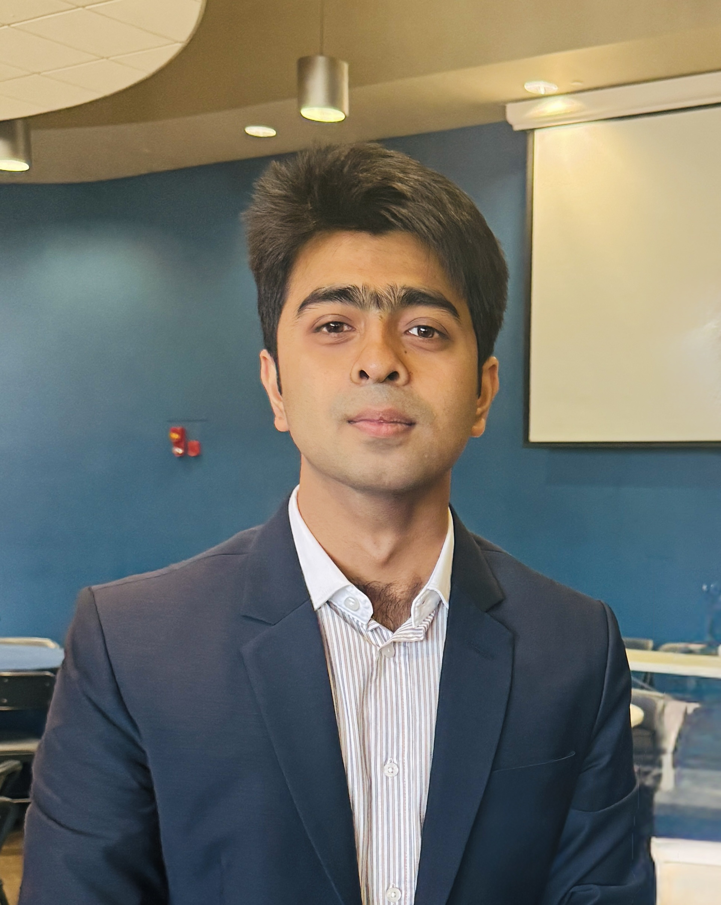

Former Lab Members
We are proud of the students and researchers who trained in the Fatigue, Fracture, and Failure Laboratory before moving on to careers in academia and industry.
Doctoral Graduates (Ph.D.)

Dr. Maryam Avateffazeli
Ph.D., Mechanical Engineering (2025)
Current Role: Research Engineer at Parker Hannifin

Dr. Shawkat Shakil
Ph.D., Mechanical Engineering (2026)
Current Role: Materials Engineer at SpaceX

Dr. Kamin Tahmasbi
Ph.D., Mechanical Engineering (2026)
Current Role: Staff R&D Engineer at Stryker
Master's Graduates (M.S.)

Garrett Webster
M.S., Mechanical Engineering (2023)
Current Role: Mechanical Engineer at Mirion Technologies

Minhazul Islam
M.S., Mechanical Engineering (2021)
Current Role: Packaging R&D Engineer at Intel

Md Naimur Rahman Antu
M.S., Mechanical Engineering (2023)
Current Role: Ph.D. Student at the University of Toledo

Dinesh Shivakoti
M.S., Mechanical Engineering (2026)
Current Role: Design Engineer at L&T Technology Services Limited (Japan)